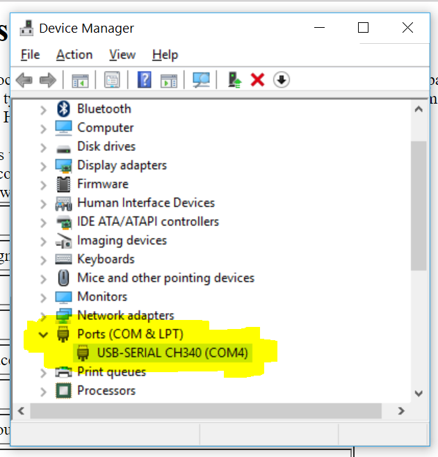

6.S063 Engineering Interactive Technologies (fall 2017)
HW2: Setup your micro-controller
Deadline: due Wednesday (September 13, 2017) at 1pm, upload here
Deliverables:
- short video (use your smart phone) showing how you upload the python code to the micro-controller using your computer console and how as a result the micro-controller's blue LED lights up, upload video here
Questions?
- post on piazza
- go to a TA office hour for building/coding oriented questions (tbd)
- go to an instructor office hour for logistical questions and grading (mondays, 4-5pm, 32-211)
- do not send us emails
Task:
Setup your micro controller so you can upload code via MicroPython from your computer.You are done when the blue light on the micro-controller blinks.

Setup How-To for Mac (Stefanie Mueller, on OSX Yosemite)
- Install the latest Python if not already (Python 3.4 or later)
- Follow this tutorial. Some tips below:
- I had to reduce the baud rate otherwise I got an error (they use 460800, I used 9600 to be safe)
esptool.py --port /dev/cu.wchusbserial1410 --baud 9600 write_flash --flash_size=detect 0 esp8266-20170108-v1.8.7.bin
- If the upload is successful, go to your terminal. Use the screen command like this:
screen /dev/cu.wchusbserial1410 115200 –L- This time baud rate 115200 worked for me, but in case it doesn't you can reduce it again.
- If you see weird signs or an empty screen, press enter a couple of times until you see the >>> for the python command line.
- Enter your python code for the LED.
- For some Macs, the microcontroller won't show up in the list of ports. In this case, you may need to install the appropriate driver for CH340G, here.
- If you still have issues, ask on Piazza.
Setup How-To for Windows (Jared Counts, on Windows 10)
- Install the latest Python if not already (Python 3.4 or later)
- Follow this tutorial. Some tips below:
- The article suggests that COM4 would be the port of your NodeMCU. If that doesn't work, you can find the correct port by doing the following:
- Make sure the USB is connected fully.
- Open up Device Manager (Windows key, type "Device Manager", hit enter)
- Expand "Ports (COM & LPT)"
- Under Ports, look for "USB-SERIAL CH340 (...)". The port is specified in the parentheses here (usually COM1, or COM2, etc.) 
-
If the prompt (">>>") on your serial terminal does not show up, or all you see is gibberish, you can try a few things:
- Press enter a few times. Also try Ctrl+C a few times.
- Restart the terminal.
- Try reflashing the chip, but include "-fm dio" as a flag. E.g.:
esptool.py --port COM4 --baud 460800 write_flash -fm dio --flash_size=detect 0 esp8266-20170108-v1.8.7.bin
- If nothing shows up in the command prompt when running esptool.py, then you may need to call the script using python manually.
- E.g.
python esptool.py ..., instead ofesptool.py ...
- E.g.
- If you still have issues, ask on Piazza.